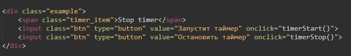
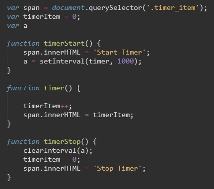

Почти все реализации JavaScript имеют внутренний таймер-планировщик, который позволяет задавать вызов функции через заданный период времени.
Синтаксис
var id = setInterval(frame, 1000);
Для того что бы остановить таймер планировщик, используем функцию clearInterval(). Входящим параметром этой функции будет наша переменная к которой применили метод setInterval.
clearInterval(id);
Код html
код Java Script
